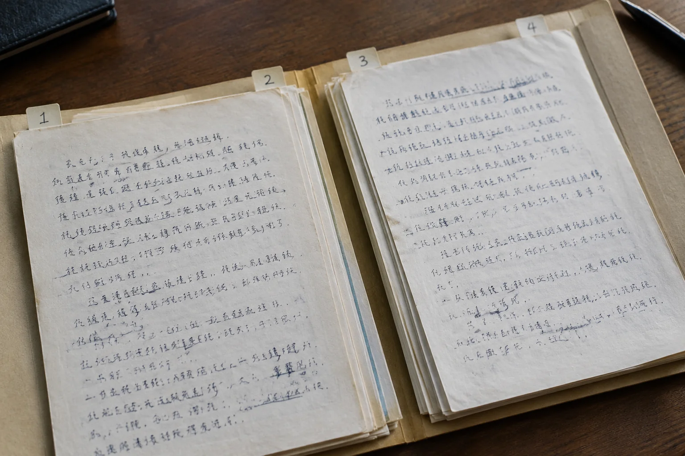

北京多页手写记录少了中间一页，编号还能重新排吗
一份材料缺页后，重新编号看起来更整齐，却会掩盖原来的文件关系。目录连续和原页完整，是两件不同的事。

保留原有顺序
北京笔迹鉴定资料交接中，多页记录应尽量沿用原页码。发现缺页时，可以在目录中标明缺失位置，再另设整理编号。不宜把后面的页直接向前挪号，否则别人接手时可能误以为文件从未中断，前后文字关系也容易被读错。
整理编号另加一列
文件本身没有页码时，可按收到的顺序建立编号，同时写明这是整理顺序，不代表原来的装订顺序。模仿笔迹长文参考尤其需要知道页面是否连续。若只能确认几张照片属于同一批，也不要进一步推定它们必然相邻，未知信息留待核实即可。
署名页不能代替缺失正文
模仿签名、模仿签字参考可以单独查看末页落款，但一张署名页不能自动说明中间几页都来自同一份原件。整页、局部和来源说明配套保存，补到材料后再核对。相似纸色或相同文件名只能作为查找线索，不能直接当成文件关系的证明。
补页保留交接时间
后来收到缺失页时，记录收到时间及提供来源，再与原目录对应。旧清单不必删除，可保留版本号说明变更。这样既能继续阅读材料，也能清楚看到哪些信息后来补齐，避免不同人员拿着不同目录讨论同一个页码。